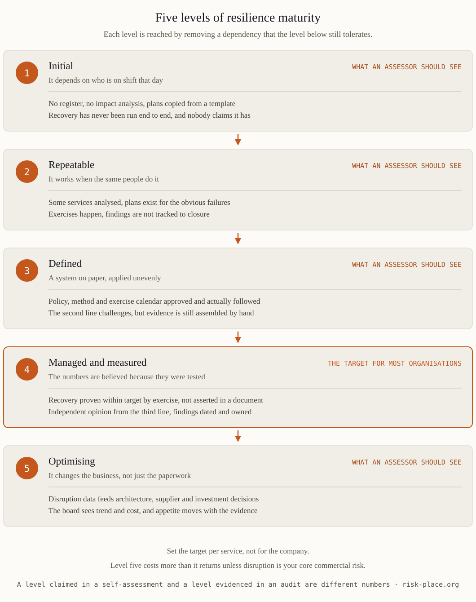

Almost every resilience maturity model in circulation runs on the same five steps — initial, repeatable, defined, managed and measured, optimising — and the labels are the least interesting part. What separates one level from the next is always a dependency being removed. Moving from initial to repeatable removes the dependency on a heroic individual, because the capability starts to exist in a method rather than in someone's head. Moving to defined removes the dependency on who happens to be doing it, since policy, method and calendar are set and followed everywhere rather than in the two departments that care. Moving to managed and measured removes the dependency on assertion: recovery times are demonstrated by test rather than declared in a document, and someone independent says so. Moving to optimising removes the dependency on the continuity function itself, because disruption data starts feeding ordinary decisions about architecture, suppliers and investment. Read the ladder that way and the assessment stops being a vocabulary exercise. The question at every step is what would have to break for this to stop working, and whether the answer is still a person's name.

Self-assessed maturity scores across a portfolio of organisations sit consistently above independently validated ones, and the gap has three structural causes rather than dishonest ones. The person scoring usually designed the thing being scored, and nobody marks their own architecture harshly. The questionnaire asks whether an artefact exists rather than when it last worked, so a plan written in 2023 and never opened scores the same as one that guided a real recovery in March. And a low score carries cost without benefit, because it triggers scrutiny and rarely triggers budget. All three are cheap to fix. State the evidence rule before the assessment starts, so each level has a named artefact and a date attached. Have internal audit sample the claims rather than repeat the exercise. And run the calibration test that settles arguments in a day — take three claims at random from a level four self-assessment and ask for the evidence within twenty-four hours. The proportion that comes back in usable form is much closer to your real level than the score on the slide.
A workable measurement set has five families, and each measure needs a target, an owner and a direction of travel. Coverage — the share of important business services with a current impact analysis and a named owner, and the share of critical suppliers whose recovery terms and out-of-hours contacts were verified this year. Proof — the share of those services whose recovery was demonstrated within target in the last twelve months, and the gap in minutes between the declared RTO and the time actually achieved when it was last tested. Speed — the elapsed time from detection to first decision in the last three real events or exercises, and the time to first external communication. Learning — the share of exercise and incident findings closed by their due date, the median age of those still open, and the count of findings that have recurred. Dependency — the number of critical processes resting on one trained person, and the share of volume flowing through a single site, route or supplier. Note what is missing. Training completion rates and plans refreshed this quarter measure effort, not capability, and a management system reported in those terms will look healthy right up to the first real disruption.
Directors do not need the radar chart, and they will not remember it. They need four things on one page. The trend of three or four measures over four to six quarters, with the delta and its cause in a sentence. What the movement cost and what it bought, because maturity that consumed two headcount and produced a recovery an hour faster is a decision the board is entitled to weigh. The exceptions, meaning the services where the level fell and why. And the target level with a date against it, so the number has a destination. Two disciplines make the page trustworthy. Never change the scale or the question set between periods without restating the history on the same basis — a redefinition that lifts the score is the commonest form of quiet inflation. And report the weakest important service rather than the portfolio average, because an average across thirty services conceals the one that will actually fail, and it is always the one nobody asked about. How much of this the board should own directly is set out in our note on the board's role in resilience.
Level four is the right destination for most organisations, and level five costs more than it returns unless disruption is your core commercial risk. Set the target per service rather than for the company as a whole — a payments platform or a hospital admissions system may justify level four, an internal reporting tool rarely justifies more than two, and paying for uniform maturity everywhere is the most reliable way to overspend on resilience. Set the cadence to match: the measures quarterly, a structured self-assessment annually, and independent validation every two years or after any material change, with results going to the audit committee rather than only to the executive being assessed. One governance rule is worth more than the rest — never make the maturity score a personal objective for the person who produces it, because that guarantees the number improves whether or not the capability does. Start from the weakest service, not the highest-profile one, and let the first honest score be low; an assessment that lands at level two and is believed is worth more than a level four nobody can evidence. Designing this measurement architecture, and the assurance that makes the number credible outside the function reporting it, is the subject of module M6 of the ERGP programme.
Maturity measurement, assurance design and the reporting that makes a resilience number credible to a board are worked through in module M6 of ERGP, the first resilience governance certification fully available in Arabic, also in English. Six modules, six practical outputs, a verifiable certificate.
Explore the ERGP programme